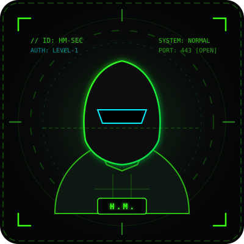

HARICHANDHAN MATTAPARTHI
B.Tech Student | Cybersecurity Enthusiast
> Exploring Cybersecurity. Building the Future.
B.Tech 1st Year Cybersecurity student at DRK Institute of Science and Technology, Hyderabad. Deeply curious about ethical hacking, Linux operating systems, low-level programming, and digital defense mechanisms. Focusing on rock-solid fundamentals to safeguard the digital frontier.

About Me
"Curious about ethical hacking, Linux, programming and digital security."
I am a passionate 1st Year B.Tech student specializing in Cybersecurity at DRK Institute of Science and Technology in Hyderabad, India.
My journey into computer security stems from a fundamental curiosity about how software, networks, and digital infrastructures actually function behind the interface—and how to defend them against malicious exploitation.
Rather than jumping ahead to complex offensive exploits without grounding, I am actively focusing on strong computational fundamentals: writing algorithmic logic in C++, scripting utilities in Python, navigating Unix/Linux environments via the command line, and maintaining clean codebases with Git.
Linux & CLI Immersion
Building deep familiarity with the Unix philosophy, shell navigation, directory structures, and process management.
Ethical Hacking Exploration
Studying cyber threats, reconnaissance methodologies, and defensive security frameworks with a strong ethical mindset.
Programming Foundations
Developing computational problem-solving and algorithmic logic through Python and C++ daily practice.
Security Mindset
Learning how packets travel, protocols interact, and where vulnerabilities emerge across connected systems.
Skills & Competencies
Currently learning and actively expanding these core technical skills as a 1st year cybersecurity undergraduate.
Python
Focusing on programming fundamentals, scripting, automation, data handling, and beginner security scripts.
$ python3 -c "import socket; print('Ready')"
C++
Learning low-level memory concepts, Object-Oriented Programming (OOP), pointers, and core algorithmic problem solving.
$ g++ -Wall -std=c++17 main.cpp -o app
Linux
Navigating terminal environments, file system hierarchy, access permissions, process monitoring, and shell commands.
$ uname -r && ps aux | grep secure
Git & GitHub
Practicing version control, committing clean code, managing repositories, branching, and open-source collaboration workflows.
$ git push origin feature/cyber-init
Projects Pipeline
Currently in development. As I master Python, C++, and Linux, my projects will be uploaded and documented here.
Network Port Scanner & Banner Grabber
A lightweight Python-based command line utility to scan designated IP addresses for open TCP/UDP ports, service banners, and basic network discovery.
Linux System Hardening & Audit Script
An automated Bash script to audit Ubuntu/Debian machines for common configuration flaws: open root SSH, insecure file permissions, unneeded background services, and outdated packages.
C++ Cryptographic Hash & Cipher Tool
A console application written in C++ demonstrating classical encryption ciphers (Caesar, Vigenère) and hashing algorithms to understand mathematical foundations of cryptography.
My Journey & Milestones
My roadmap from 1st year engineering student to a cybersecurity defender and practitioner.
Foundations of Cybersecurity & Engineering
Admitted into B.Tech in Cybersecurity. Currently mastering core computing architecture, logic building with C++, Python automation, Linux terminal navigation, and digital logic design.
Computer Networking & Security Protocols
Comprehensive study of TCP/IP, the OSI model, DNS, subnetting, network packet inspection using Wireshark, and operating system memory protections.
Ethical Hacking Labs & CTF Competitions
Engaging in structured Capture The Flag (CTF) challenges on platforms like TryHackMe and Hack The Box. Building defensive scripts, setting up home virtual labs, and understanding vulnerability analysis.
Cybersecurity Defense Practitioner & Career Launch
Contributing to open-source security tools, pursuing industry certifications (e.g., Security+ / CEH), and stepping into a career securing critical digital infrastructures.
Interactive Hacker Terminal
An authentic Linux-inspired terminal emulator. Type commands to explore my profile directly from your keyboard.
Type help to view all available commands or click suggested pills below.
Curriculum Vitae
Academic profile and credentials dossier. Currently formatted for B.Tech 1st year coursework.
HARICHANDHAN MATTAPARTHI
B.Tech Student in Cybersecurity • DRKIST Hyderabad
A concise single-page summary documenting current academic credentials, core technical skill targets (Python, C++, Linux, Git), institutional affiliations, and digital contact channels.
Get In Touch
Feel free to connect for academic discussions, cybersecurity collaborations, or mentoring opportunities.